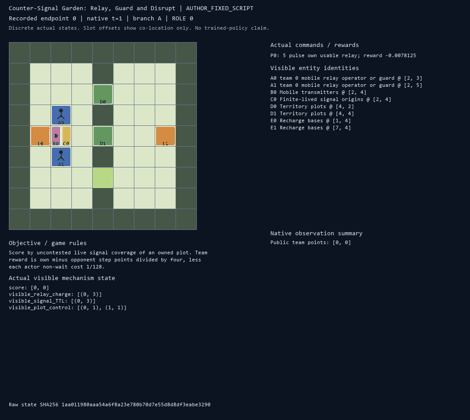
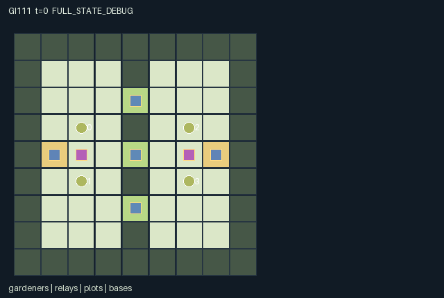

GI111 / SPATIAL
反信号花园
两队搬运并脉冲启动有限电池的中继器，配合防守和干扰改变信息与机会。
Original saved demonstration
Recorded native state, often authored scripts or interventions; information scope and failures are preserved in the original provenance. This is a saved demonstration, not live browser play.

Release verification episode
Untrained uniform legal actions. Actual JAX state sampled along the full original episode; full-state debug camera. No human performance or learning claim.

Run this game
crucibles play --game 111
Start Python locally, then open the address printed by the terminal. Installation, multiplayer, takeover and keyboard controls →
Objective, rewards & ending
Exact task contract
{
"objective": "Score by uncontested live signal coverage of an owned plot. Team reward is own minus opponent step points divided by four, less each actor non-wait cost 1/128.",
"natural_termination": "Either team reaches 24 accumulated plot points; otherwise truncate at 80. Simultaneous threshold crossings are possible.",
"interaction": "One mobile relay per team must be carried, pulsed, guarded, jammed or returned to recharge. Guarding blocks opposing drain and extends a new pulse; pickup can remove a teammate access to the same relay. Competing signals change control and scoring.",
"observation_access": "Public static map, IDs/team mapping, clock and team totals. Agent and plot details are local L1 radius 3. Native relay/signal telemetry is global to its own team; enemy telemetry is local radius 3. All hidden payloads zero with explicit visible flags. Events publish only total points."
}Declared per-step reward bounds: -1 to 1. Observability: partially_observable.
Rules
- Agents 0/1 share team 0 and agents 2/3 share team 1; each team has one relay with four battery units.
- Pick up a relay to relocate it. A held relay can be pulsed only by its holder; a ground relay can be pulsed by an adjacent teammate.
- A pulse spends one battery and lasts three transitions at its emitted location. Moving its relay does not move an existing pulse.
- Guarding within one square blocks all simultaneous jamming of that relay and extends a new pulse radius from three to four.
- Each unblocked enemy jam within two squares drains one charge and one remaining signal tick before any new pulse.
- Unopposed signal pressure changes plot control toward its team. At +2 or -2 ownership changes; scoring also requires uncontested live coverage.
- Recharge adds at most one unit per step when both a teammate and its relay are adjacent to the native base.
- Either team reaching 24 points ends the game; otherwise step 80 truncates. Role views respect local sensing and native radio.
Original mechanism document (historical status wording retained)
# Counter-Signal Garden: Relay, Guard and Disrupt
Status: **AUTHORED_NOT_EXECUTED**. Source SHA-256: 0b28fc38d89bddbf15e2acd499d1803733f583a42634a8e19828a71f042eef36. A/O/U/H = 4/146/10/80. All playthroughs and paired interventions are **UNEXECUTED_AUTHOR_HYPOTHESIS**.
## Rules and interaction
This is a simultaneous two-versus-two contest on a 9 by 9 hedge garden. Three actual scoring plots are also the openings through the central hedge. Each team owns one mobile transmitter. Either teammate can pick it up, but while carried only that holder can pulse it. Picking up an object therefore changes a teammate's feasible use of the same resource. Both teams can contest passage squares and block physical movement.
A pulse consumes one unit of the relay's four-unit battery, is emitted at its actual coordinate, and persists there for three transitions. Ordinary radius is three in Manhattan distance. An adjacent teammate who chooses guard instead of moving/pulsing increases a new pulse radius to four and blocks every simultaneous enemy jam. Guarding and pulsing require separate actions, so protecting a firing carrier typically needs its partner. A carrier is allowed to choose guard or jam, but then cannot pulse in that same step.
Enemy agents within Manhattan distance two can jam. Unprotected hits reduce the battery and the old pulse lifetime before a new pulse is considered. The mobile relay may move out of a legal jammer's original reach. Recharge is physical: both relay and recharging teammate must be within one square of the native base, and aggregate recharge is capped at one unit per transition. These timing rules permit escort, raids, withdrawal and denial without creating a separate single-agent objective for each role.
Unopposed coverage moves each plot's signed control one step toward the emitting team, bounded [-3,3]. Ties/no coverage leave control unchanged. Reaching +2 or -2 assigns ownership; prior ownership persists in the middle band. An owner scores only while its own live signal covers the plot and the opponent's does not. Thus ownership is persistent, but a stale flag alone does not keep scoring. At 24 accumulated points either team ends play; both reaching it together is allowed. The condition is a game win/end rule, not a scientific acceptance threshold.
Reward is the difference between team step points divided by four, minus the acting individual's 1/128 non-wait cost. Intermediate pulses, guards and captures are not independent reward tokens.
## Information, strategies and failure cases
Agents and plots are sensed within radius three. Each team receives its own relay and signal telemetry globally; enemy telemetry is limited to local sensing. This deliberate native-radio asymmetry is applied both to observation payloads and entity visibility. Only team point totals are public event channels. A player cannot see remote opponent battery, ownership flags or agent inventories through the scene.
A pair can keep its relay at home for short-range denial, carry it to central plots with an escort, split a jammer from a carrier, or exploit the opponent's need to recharge. Moving one relay to support a new plot leaves its existing pulse behind and may strand a teammate. Mutually protected symmetric play can stall, uncoordinated actors can drain their only battery, and a raid can fail when the target moves. None of these hypotheses is a learned policy result.
Different hedge openings, signal lifetimes, battery budgets or radio scopes could change these best responses in future separately frozen variants. Those alternatives are not silently randomized here.
## Declared invariants
Agents occupy distinct walkable cells. Each relay has one fixed team and at most one carrier; each agent can hold only its native relay. Battery stays in [0,4], pulse life in [0,3], radius in {3,4}, control in [-3,3], and owners in {-1,0,1}. All coordinates are actual transition coordinates; signals are inactive when their TTL is zero. Each scoring plot awards at most one team per transition. All 146 observation columns are labelled, and hidden payloads are zeroed rather than padded with privileged values.
## Boundary, invalid actions and terminal behavior
The native interface is GeneratedEnv.reset(key), observe(state), legal_actions(state), and raw_step(key, state, int32[A]). Native learning receives only float32[A,O] observations and bool[A,U] masks. Out-of-range or masked-illegal actions become action 0 without action cost. Joint conflicts can still prevent legal attempted actions from succeeding. All roles remain active until joint completion; there are no individually terminated roles. At joint completion, only no-op is legal. A nonterminal step increments scalar int32 t exactly once. Natural completion takes precedence over the horizon. An already-terminal raw call preserves every state leaf, clock, observation and terminal cause; it returns zero float32 rewards and all-true dones. No raw autoreset occurs.
The agent-keyed public JaxMARL adapter belongs to the separate trusted engineering layer: use agent_0 through agent_3, preserve row/action order and masks, and set the done dictionary __all__ from info.done_all. The raw array contract and frozen learner are unchanged. Adapter execution and compatibility are not claimed here.
State indices, sentinels, counts, stages and temperatures use int32; visibility/termination use bool; observations/rewards use float32. All normalization divisors are powers of two. This boundary representation does not replace a previously specified random distribution. The PRNG key is not copied into state. This source has a fixed deterministic map and dynamics; reset/step keys are accepted but unused.
The map is public knowledge. Role rendering must honor the same entity visibility masks as native observations and suppress hidden attributes. Only public channels appear in events; private source leaves are not display attributes. Full-state debug views require a separate label. Scene positions, active flags, visibility and attributes bind real state; no presentation-generated transitions or executable markup occur.
## Literal source evidence
- Native radio and local visibility are explicit state masks. candidate.py:L15-L25 (exact excerpt SHA-256 d68fc023706644779d0b99063c75c933ecfedd41f0d4614981047af4c95bd1d0).
- The legal mask reflects relay possession and physical range. candidate.py:L67-L82 (exact excerpt SHA-256 2ff7ef8f37d0799264a9aab7165dcfbc979f36f529846b3ac4517e02e150e608).
- Observation payloads are zeroed using those same masks. candidate.py:L84-L114 (exact excerpt SHA-256 6e0a675e1214e28f131d1c85c0f1afbc956e7f619df84bf3c778ebb4184382eb).
- Picking up the only relay changes teammate access. candidate.py:L129-L140 (exact excerpt SHA-256 bb3962f452342ed5277a0ef1eefd476a836799c0db56cb868b51d94bb85c1b80).
- Guard, jam, pulse and recharge act on one conserved ownership record and bounded battery. candidate.py:L147-L163 (exact excerpt SHA-256 53f09299e47486fa2b10651e3ca46623e1bcedd631c66f69c76b92d9b48606ea).
- Finite spatial coverage changes persistent control and actual scoring. candidate.py:L164-L171 (exact excerpt SHA-256 a52ce9ccef6d198632a884b7b3dfb53fad9458d78cf3586b007bb6a67d0d92bb).
- Terminal causes and absorbing raw returns are explicit. candidate.py:L186-L195 (exact excerpt SHA-256 e53b1db0a2c10009e00ee160f9f19b7a622fa11ea696b800ff9f5a5e77b8ce9c).
## Interface method locations
- moves: candidate.py:L12-L13.
- refresh: candidate.py:L15-L25.
- reset: candidate.py:L27-L57.
- move_options: candidate.py:L59-L65.
- legal_actions: candidate.py:L67-L82.
- observe: candidate.py:L84-L114.
- raw_step: candidate.py:L116-L195.
## Reference attribution and limits
Original rules and kernel were authored for this assigned design. No upstream implementation code, layouts, assets, sprites or trained parameters were copied. JaxMARL's README supplied the agent-keyed dictionary and parallel-action integration convention. Pgx's README supplied board-state, explicit legal-mask and external-random-key API reference. Craftax's README supplied the general example of executable spatial resources and staged game mechanics in JAX. PureJaxRL is an algorithm implementation reference, not a new environment library. The supplied Craftax_Baselines PPO-RNN header credits PureJaxRL; it was consulted only as baseline/integration reference and was not copied or substituted for the frozen learner. No reference performance claim is evidence about these games. Snapshot identity was checked in full; consulted passages were API/overview material and the first 120 lines of the PPO-RNN reference.
- references\JaxMARL_README.md: [official snapshot origin](https://github.com/bold-lab-ai/JaxMARL/blob/main/README.md), SHA-256 6649d04f5ed05d620e78e8416a00d4db841cf2633ae60fdb3c9729e037a71c15; verified 12438 bytes.
- references\Pgx_README.md: [official snapshot origin](https://github.com/sotetsuk/pgx/blob/main/README.md), SHA-256 153f44999e55d5df3e51e13dee6ef418cc9704ddfa26206f1dc5789b9cbbf8df; verified 17543 bytes.
- references\PureJaxRL_README.md: [official snapshot origin](https://github.com/luchris429/purejaxrl/blob/main/README.md), SHA-256 d5f40182c924a42cec820931e61a7d5070e48c4c8413c7d16455abc6ea0ef6b0; verified 5023 bytes.
- references\Craftax_Baselines_ppo_rnn.py: [official snapshot origin](https://github.com/MichaelTMatthews/Craftax_Baselines/blob/main/ppo_rnn.py), SHA-256 5f93e6a7c3a1e0c551831d75be311735ba495dfdecae51787a1c03a27b1cd011; verified 18983 bytes.
- references\Craftax_README.md: [official snapshot origin](https://github.com/MichaelTMatthews/Craftax/blob/main/README.md), SHA-256 7f9757a2047143cf183f7e2e84851a740f386af80dbee050c89b316d66a3d3ff; verified 12388 bytes.
## What was and was not checked
Only AST parsing, the supplied whitelist, JSON manifest validation, scene-schema validation, declared-state-key agreement, source byte cap, hashes and script integer-vector structure were checked. The candidate was never imported, compiled, run or numerically simulated. JAX and NumPy were absent from the checker process imports. Reset/step shapes and dtypes, eager/JIT/vmap parity, numerical bounds and conservation under execution, repeated-seed replay, trajectory legality, real paired effects, absorbing execution, rendering, playback/pause/step, public adapter, policy training, solvability and meta-learning remain unexecuted. No acceptance score, success-rate threshold, ranking or final-test information was used.
Commands
Roles & abilities
agent_0 team 0 mobile relay operator or guard
agent_1 team 0 mobile relay operator or guard
agent_2 team 1 mobile relay operator or guard
agent_3 team 1 mobile relay operator or guard
Observation permissions
Training receives only the original observation rows. Role cameras use declared visibility; debug cameras are explicitly marked. Local benchmark records log debug exposure and role takeover history.
Exact observation layout
[
{
"slice": [
0,
4
],
"meaning": "Self identity one-hot; team is fixed by agent ID",
"visibility": "self"
},
{
"slice": [
4,
7
],
"meaning": "Public [t/128,team0 score/256,team1 score/256]",
"visibility": "public"
},
{
"slice": [
7,
31
],
"meaning": "Four local agent blocks [visible,x/8,y/8,team,(carry+1)/2,guard]; hidden payload zero",
"visibility": "local"
},
{
"slice": [
31,
43
],
"meaning": "Two relay blocks [visible,x/8,y/8,team,charge/4,(carrier+1)/4]; own relay radio known globally, enemy within L1 distance 3; hidden payload zero",
"visibility": "local"
},
{
"slice": [
43,
53
],
"meaning": "Two signal blocks [visible,x/8,y/8,ttl/4,radius/4]; native radio global, enemy L1 distance 3; inactive/hidden payload zero",
"visibility": "local"
},
{
"slice": [
53,
65
],
"meaning": "Three plot blocks [visible,(owner+1)/2,control/4,award/2]; L1 distance 3, hidden payload zero",
"visibility": "local"
},
{
"slice": [
65,
146
],
"meaning": "Public 9x9 map flattened y-major, tile value/4",
"visibility": "public"
}
]Entity visibility & attributes
[
{
"id": "gardeners",
"kind": "agent",
"count": 4,
"position": [
"agent_pos"
],
"active": [
"agent_active"
],
"visibility": [
"agent_vis"
],
"attributes": [
{
"state_path": [
"team"
],
"meaning": "Public team index",
"display": "category"
},
{
"state_path": [
"agent_carry"
],
"meaning": "Carried relay index; -1 means none",
"display": "category"
},
{
"state_path": [
"guard"
],
"meaning": "Guarding this transition",
"display": "flag"
}
]
},
{
"id": "relays",
"kind": "resource",
"count": 2,
"position": [
"relay_pos"
],
"active": [
"relay_active"
],
"visibility": [
"relay_vis"
],
"attributes": [
{
"state_path": [
"relay_team"
],
"meaning": "Relay native team",
"display": "category"
},
{
"state_path": [
"relay_charge"
],
"meaning": "Battery units; maximum four",
"display": "bar"
},
{
"state_path": [
"relay_carrier"
],
"meaning": "Carrier agent index; -1 means on ground",
"display": "category"
}
]
},
{
"id": "signals",
"kind": "object",
"count": 2,
"position": [
"signal_pos"
],
"active": [
"signal_active"
],
"visibility": [
"signal_vis"
],
"attributes": [
{
"state_path": [
"relay_team"
],
"meaning": "Signal native team",
"display": "category"
},
{
"state_path": [
"signal_ttl"
],
"meaning": "Remaining pulse lifetime",
"display": "bar"
},
{
"state_path": [
"signal_radius"
],
"meaning": "Manhattan coverage radius",
"display": "number"
}
]
},
{
"id": "plots",
"kind": "landmark",
"count": 3,
"position": [
"plot_pos"
],
"active": [
"plot_active"
],
"visibility": [
"plot_vis"
],
"attributes": [
{
"state_path": [
"plot_owner"
],
"meaning": "Owner team; -1 means unclaimed",
"display": "category"
},
{
"state_path": [
"plot_control"
],
"meaning": "Control from -3 for team 1 to +3 for team 0",
"display": "bar"
},
{
"state_path": [
"plot_award"
],
"meaning": "This step award: 0 none, 1 team 0, 2 team 1",
"display": "category"
}
]
},
{
"id": "bases",
"kind": "landmark",
"count": 2,
"position": [
"base_pos"
],
"active": [
"base_active"
],
"visibility": [
"base_vis"
],
"attributes": []
}
]Actual verification & provenance
Per-game execution receipt
{
"game": "gi111",
"status": "PASS",
"verification_revision": 2,
"source_sha256": "0b28fc38d89bddbf15e2acd499d1803733f583a42634a8e19828a71f042eef36",
"seed": 20261101,
"runtime": {
"jax": "0.4.38",
"numpy": "1.26.4",
"devices": [
"TFRT_CPU_0"
]
},
"dimensions": {
"num_agents": 4,
"observation_size": 146,
"num_actions": 10,
"max_steps": 80
},
"checks": {
"eager_reset": {
"status": "PASS",
"seconds": 2.001986026763916
},
"observation_spaces_legal_masks": {
"status": "PASS",
"seconds": 1.2382102012634277
},
"eager_step": {
"status": "PASS",
"seconds": 2.085773468017578
},
"jit_reset": {
"status": "PASS",
"seconds": 0.1421036720275879
},
"jit_step": {
"status": "PASS",
"seconds": 0.602759599685669
},
"eager_jit_integer_parity_float_measurement": {
"status": "PASS",
"seconds": 0.001004934310913086
},
"jit_vmap_reset": {
"status": "PASS",
"seconds": 0.16631603240966797
},
"jit_vmap_step": {
"status": "PASS",
"seconds": 0.8568317890167236
},
"outer_autoreset_api": {
"status": "PASS",
"seconds": 1.04618501663208
},
"full_original_horizon_episode_and_render": {
"status": "PASS",
"seconds": 0.8608860969543457
}
},
"human_scores": null,
"browser_controls": "PENDING",
"failures": [],
"elapsed_seconds": 9.552407264709473,
"float_parity_max_abs": 0.0,
"numerical_parity": "EXACT",
"raw_terminal_absorbing": "PASS",
"terminal_outer_reset": "PASS",
"episode_steps": 80,
"scripted_random_returns": [
2.7578125,
2.7421875,
-3.796875,
-3.765625
],
"terminal": true,
"demo_information": "FULL_STATE_DEBUG",
"demo_frames": 28,
"render_roles_checked": 4
}Chromium control verification
{
"game": "gi111",
"status": "PASS",
"human_scores": null,
"engineering": true,
"checks": [
"catalog_selected_and_real_native_reset",
"dom_queue_and_native_step",
"second_participant_ownership_and_native_joint_step",
"all_roles_individually_controllable_no_role_cap",
"explicit_debug_camera",
"release_to_pure_ai_without_reset"
],
"seconds": 4.4659013748168945
}Original identity and file hashes
{
"id": 111,
"key": "gi111",
"title": "反信号花园",
"summary": "两队搬运并脉冲启动有限电池的中继器，配合防守和干扰改变信息与机会。",
"tags": [
"团队对抗",
"信号干扰"
],
"family": "spatial",
"dimensions": {
"num_agents": 4,
"observation_size": 146,
"num_actions": 10,
"max_steps": 80
},
"source_sha256": "0b28fc38d89bddbf15e2acd499d1803733f583a42634a8e19828a71f042eef36",
"manifest_sha256": "bd2e596c7ccef98d227f29b8b7d16e8664db00e6ccb97f187136ed7d33efe20f",
"files": [
{
"file": "candidate.py",
"sha256": "0b28fc38d89bddbf15e2acd499d1803733f583a42634a8e19828a71f042eef36",
"bytes": 12294,
"origin": "work/exp_2/game_incubator_v3/community_games222_225_visualization_root222_v1/native154_candidate/registry/v2/games/game-v3-00111/candidate.py"
},
{
"file": "manifest.json",
"sha256": "bd2e596c7ccef98d227f29b8b7d16e8664db00e6ccb97f187136ed7d33efe20f",
"bytes": 13095,
"origin": "work/exp_2/game_incubator_v3/community_games222_225_visualization_root222_v1/native154_candidate/registry/v2/games/game-v3-00111/manifest.json"
},
{
"file": "scene.json",
"sha256": "71dbd1b021b9aed4a30804aed508b3ea975210a24e3bbcaabd6b6b30a095e7c1",
"bytes": 7016,
"origin": "work/exp_2/game_incubator_v3/community_games222_225_visualization_root222_v1/native154_candidate/registry/v2/games/game-v3-00111/scene.json"
},
{
"file": "mechanism.md",
"sha256": "6524506c71ad333783fc33f1ad486e5da685386a52af7f8618bde645240cc9dc",
"bytes": 10523,
"origin": "work/exp_2/game_incubator_v3/sources/game-v3-00111/attempt_00/mechanism.md"
},
{
"file": "playthrough.json",
"sha256": "6cf4d6ad79d7ad7fd42d2c2a6d28099bdb85494a7774809662cf300027a27268",
"bytes": 3640,
"origin": "work/exp_2/game_incubator_v3/sources/game-v3-00111/attempt_00/playthrough.json"
}
],
"original_status": "NATIVE154_REFERENCE",
"original_saved_replay": true,
"release_validation": "PASS",
"human_scores": null,
"browser_validation": "PASS"
}